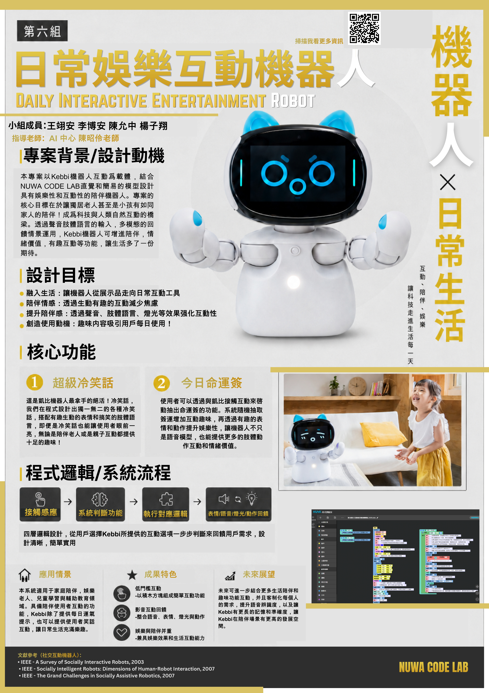

讓科技走進生活每一天

讓機器人從展示品走向日常互動工具
透過情緒互動，減少焦慮
以聲音、表情、燈光與動作強化互動
以趣味內容提高主動接觸意願
使用者講話體驗後、Kebbi 播放冷笑話內容，並依互動情境做回饋，動作與表情回饋，提升興趣與參與感，促使用者的日常愉悅經驗與能力，並深入與機器人的距離。
使用者可透過聲控啟動抽籤流程，系統隨機抽取一句命運籤建議，並以語音與表情動作呈現結果，增加使用趣味性。互動過程日常陪伴性，使機器人不只是語音機器，也能提供情緒安慰感。
(電腦版支援滑鼠懸停展開卡片)
本專案以 Kebbi 機器人為互動載體，結合 Nuwa Code Lab 視覺化程式設計，設計新玩具具有娛樂性與陪伴感的互動功能。專案核心目標是讓家庭成員在學習、遊戲過程機器人如同家人般陪伴，成為人與科技之間更自然的互動橋樑。透過聲音與肢體輸入，多模態回饋與情境應用，Kebbi 可增進兒童學習陪伴、居家生活互動、日常清潔與照顧生活情境中的豐富樂趣。
本系統適合應用於家庭陪伴、遊戲娛樂、兒童學習與輔助教育場域、具備娛樂陪伴使用者互動與學習，Kebbi 除作為輔助陪伴，可增進使用者互動體驗，讓日常生活中充滿樂趣與陪伴趣味。
未來可進一步結合更多生活劇本，個人化內容，語音辨識準確度與記憶，讓 Kebbi 在應用陪伴場域中具備更高的智能發展潛能。